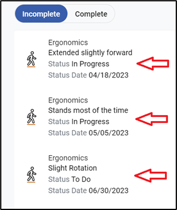
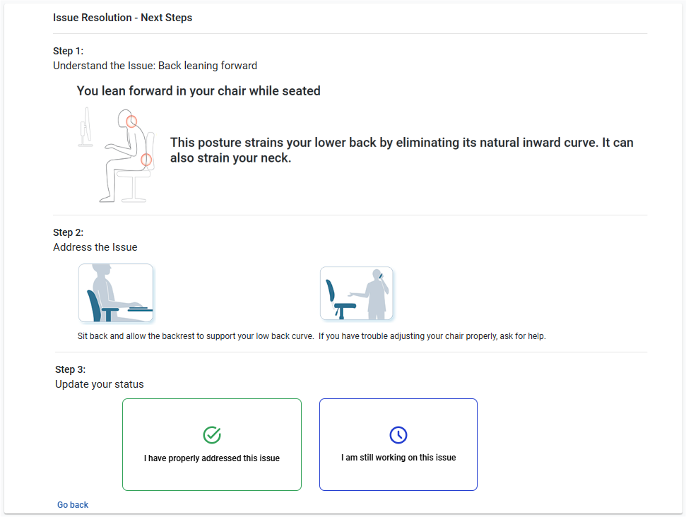

from RSIGuard.
from RSIGuard.
What is To-Do List?
To-Do List (formerly Issue Resolution ) is a tool to let you work on issues that you identified while taking the Ergonomics Assessment and Training. Each issue that is identified becomes a To-Do item that you can work through to lower your risk at the computer.
To visit the To-Do List:
from RSIGuard.You'll see a list of your unaddressed issues similar to this:

Click on the item you wish to work on and follow the 3-step process. For example:

The "Incomplete" tab shows items that still need attention.
The "Complete" tab shows items you have indicated as having been addressed.